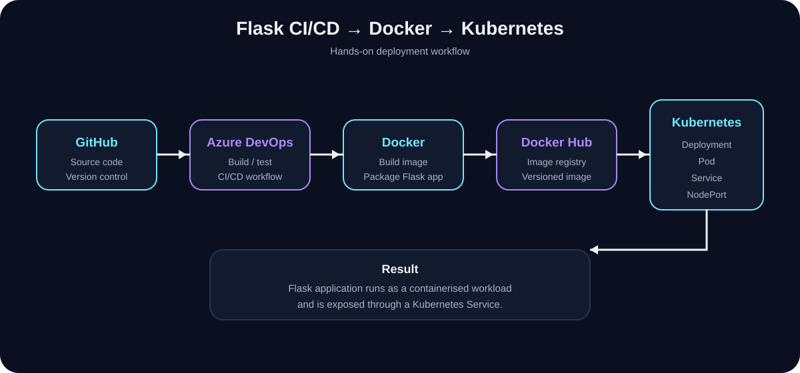
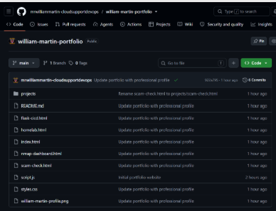
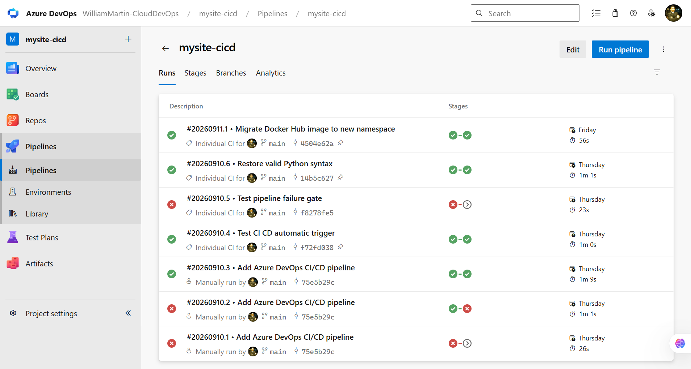
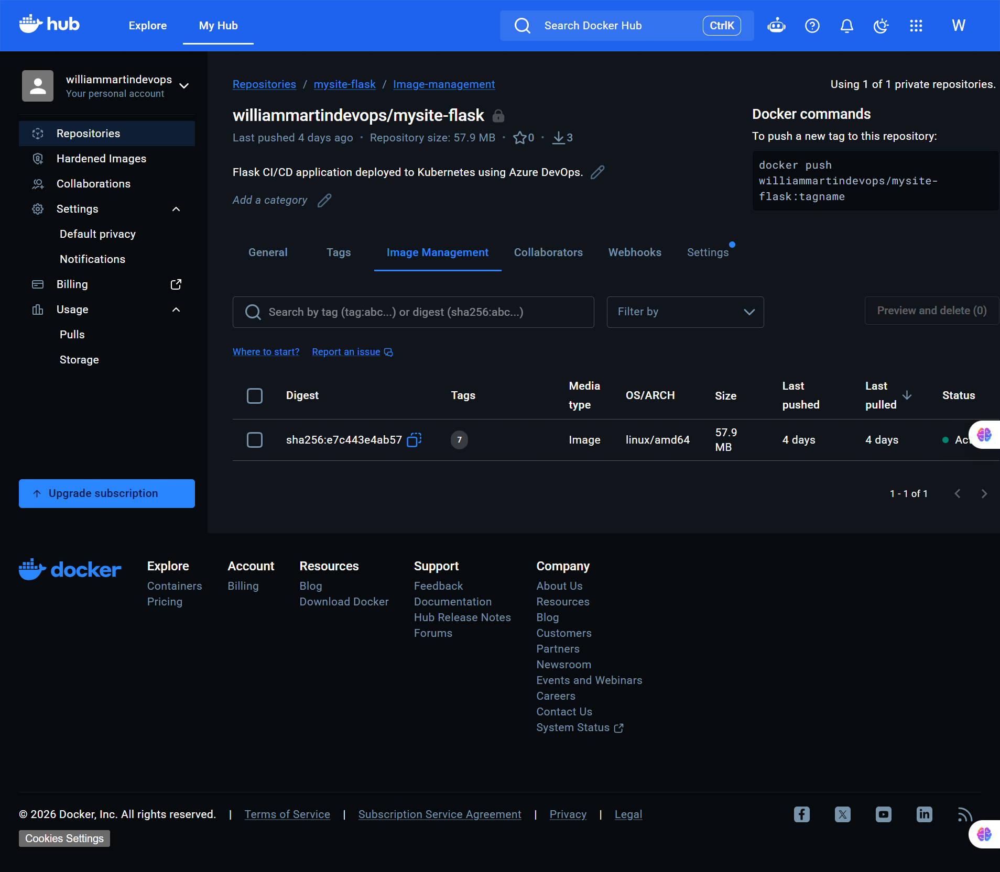
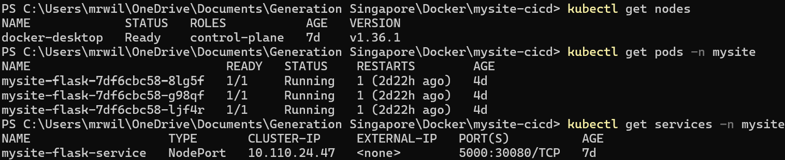
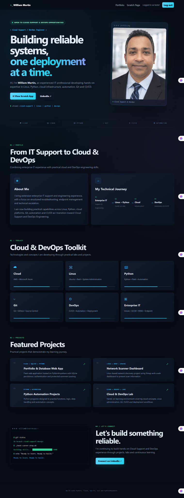

DEVOPS • CONTAINERISATION • ORCHESTRATION
Flask CI/CD
on Kubernetes
A hands-on project that took a Flask web application from source code to a containerised workload running on Kubernetes.
01 — THE CHALLENGE
Move from “it works on my machine” to a repeatable deployment.
Problem
A web application needs a consistent way to package, distribute and run the same application environment across machines.
Goal
Containerise the Flask app, publish the image to a registry, deploy it to Kubernetes and verify the application through a service.
02 — ARCHITECTURE
Deployment flow.

The workflow separates application source code, container packaging, image storage and runtime orchestration. This makes each stage easier to troubleshoot and improve.
03 — WHAT I DID
Hands-on implementation.
1. Containerised the application
- Prepared the Flask application for container execution.
- Created a Dockerfile describing the application environment.
- Built and tagged a Docker image.
- Ran the container locally and verified the web application.
2. Published the image
- Authenticated to the container registry.
- Pushed the tagged image to Docker Hub.
- Used the registry image as the deployable application artifact.
3. Deployed to Kubernetes
- Created a dedicated Kubernetes namespace.
- Configured registry credentials for the namespace.
- Created a Deployment to manage the application Pod.
- Created a Service using NodePort to expose the application.
4. Validated and troubleshot
- Checked Pod status and cluster resources with kubectl.
- Verified the Service and exposed application port.
- Used systematic troubleshooting when commands or configuration did not work as expected.
04 — KEY COMMANDS
Commands I can explain in an interview.
These commands represent the core lifecycle: build the image, run it, publish it, create Kubernetes resources, and verify the running workload.
05 — WHAT I LEARNED
From commands to operational thinking.
Containerisation
I learned how Docker packages an application and its runtime requirements into a portable image.
Kubernetes
I learned the relationship between a Deployment, Pod and Service, and how Kubernetes maintains the desired application state.
Troubleshooting
I learned to validate each layer separately rather than assuming that a running container automatically means the application is reachable.
CI/CD mindset
The next step is to automate build, test, image publication and deployment so the process is repeatable and less dependent on manual commands.
06 — NEXT IMPROVEMENTS
How I would take this toward production.
Automation
Complete the Azure DevOps pipeline for build, test, image push and Kubernetes deployment.
Security
Use secure secrets handling, least-privilege access, image scanning and non-root containers where appropriate.
Observability
Add application and infrastructure logging, metrics, health checks and actionable alerts.
Reliability
Add readiness/liveness probes, resource requests and limits, controlled rollouts and rollback procedures.
07 — PROJECT EVIDENCE
From source to a working application.
The following screenshots are real implementation evidence from this project. Together they show the source repository, CI/CD pipeline, container registry, Kubernetes deployment and the working Flask application.
GitHub Portfolio Repository
The GitHub repository contains the portfolio site and project case-study pages, demonstrating source control and the structure used to document the work.

Azure DevOps Pipeline
The pipeline history shows iterative CI/CD work, including successful runs and deliberate testing of a failure gate before subsequent fixes.

Docker Hub Registry
The private repository contains the mysite-flask image, with Linux amd64 image information and multiple tags available for deployment.

Kubernetes Deployment
The Kubernetes evidence shows a Ready control-plane node, three running Flask replicas and a NodePort service exposing port 5000 through port 30080.

Working Flask Application
The application was successfully validated through the Kubernetes NodePort at http://localhost:30080. The HTTP request returned 200 OK and the browser displayed the Flask application.

08 — REFLECTION
Why this project matters to my career.
This project connects my existing enterprise support background with modern cloud and DevOps practices. It demonstrates that I can learn a new technology stack, troubleshoot across multiple layers, document what I build and think about how a lab solution would need to evolve for production.